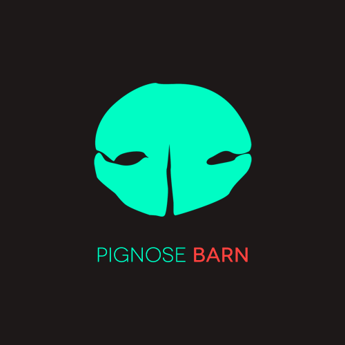

PIGNOSE
PIGNOSE
개발 연구 & 스타트업 미디어를 공유합니다.
PIGNOSE FACEBOOK

피그노즈 페이스북에서는 다양한 스타트업을 준비하는 예비창업자 & 개발자를 위한 정보를 공유하고 있습니다. 벌써 2,500명의 사용자들이 페이지를 좋아해주셨으며 추후 이런 미디어 서비스를 PIGNOSE INSIGHT로 분리하여 공식 웹 사이트를 통해 정보를 제공하고자 준비하고 있습니다.
또한 높은 퀄리티의 크리에이티브와 질좋은 컨텐츠를 바탕으로 사용자들에게 시각적 만족을 주는것에 그치지 않고 커다란 브랜드와 커뮤니티의 형성 거기서 발생하는 산출물들을 바탕으로 매거진을 출판하는 것까지 기대하고 있습니다. 여러분의 관심과 요구사항을 모아 더 커다란 커뮤니티 형성에 노력하겠습니다.
PIGNOSE BARN

피그노즈 반은 소규모 개발랩입니다.
끊임없이 쏟아지는 개발 문서들을 만들어내는데 기여하는 한사람의 연구공간이며 피그노즈의 정신을
잘 보여주고 있는 컨텐츠입니다. 피그노즈 반에서는 여러 오픈소스를 기여하고 있으며 현재 기여하고 있는
오픈소스는 아래와 같습니다.
| 이름 | 프로젝트 설명 | |
|---|---|---|
| io-hashids | hashids의 io lang 라이브러리, 이것을 진행하면서 vscode-io도 같이 기여하게 되었다. | 프로젝트 보기 |
| hiss | python cli 기반 database revision 및 migration 관리 도구 | 프로젝트 보기 |
| pg-calendar | 웹 프론트엔드 캘린더 라이브러리 | 프로젝트 보기 |
| browser-detect | 프론트엔드와 백엔드 에이전트 탐지 라이브러리 | 프로젝트 보기 |
| formula | 웹 프론트엔드 계산 수식 작성 WYSWYG 라이브러리 | 프로젝트 보기 | 그 밖에 20개의 프로젝트 살펴보기 |